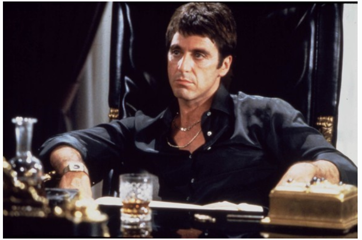
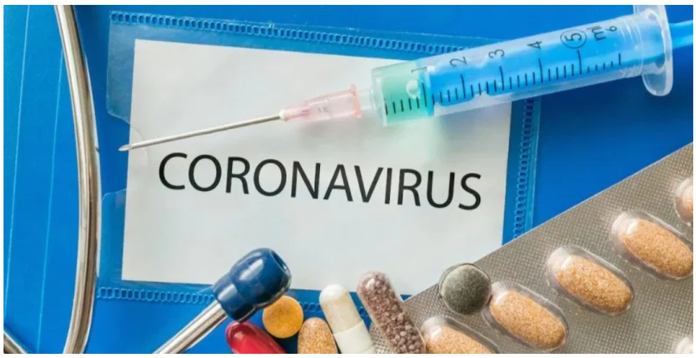

PRIMA REACȚIE A ANTONIEI, DUPĂ CE S-A SPUS CĂ S-A DESPĂRȚIT DE ALEX VELEA
Pentru detalii complete apasa aici!
Antonia a distribuit pe pagina sa de Instagram o fotografie cu ea și Alex Velea, iar descrierea alăturată imaginii respective i-a determinat pe unii dintre internauți să lanseze o ipoteză absolut suprinzătoare. Au considerat, nici mai mult și nici mai puțin, că acesta ar fi semnalul unei… despărțiri.
„Once upon a time, i love you, the end. My story”, a scris Antonia în mediul online. Iar semnele de întrebare și-au făcut, imediat, apariția. Numai că frumoasa Antonia a spulberat toate îndoielile, făcându-i lui Alex Velea o declarație de dragoste de toată frumusețea, iar admiratorii cuplului ar trebui să fie liniștiți. Cei doi sunt împreună, trăiesc o frumoasă poveste de dragoste, zvonurile referitoare la o eventuală ”ruptură sentimentală” fiind doar… apă de ploaie.
„Cei mai mulți dintre voi nu știți, dar omul acesta întotdeauna mi-a suportat toanele. Când sunt în perioada sensibilă a lunii și am schimbări de dispoziție, în loc să se enerveze, el mă întreabă dacă am dureri și dacă poate să mă ajute cu ceva. Nu mai spun că, dacă mă accidentez, e ca și cum am fi siamezi, îmi simte durerea și îmi spune că ar vrea să o ia pe toată asupra lui. Are o răbdare infinită cu mine, este un exemplu când vine vorba de răbdare”, începe declarația Antoniei.
„Când sunt moleșită, leneșă, iar telecomanda este chiar alături, pe măsuța de lângă canapea, el tot se ridică și o ia pentru mine. Mă întreabă ce mi-ar plăcea să mănânc și, dacă îi răspund pui prăjit, zice „ok, dar îl facem la grătar, pentru că vrei să arăți bine la vară”. Îi propun să lăsăm copiii la părinții lui pentru câteva zile, e de acord, dar la nici o oră de când i-am lăsat îmi spune că-i e dor de ei și îi vrea înapoi. Mă învață mereu să fiu mai bună. Dacă mă vede că am tendința să mă enervez, să fiu rea, mă oprește și-mi spune că mi se potrivește mai bine bunătatea, că asta e adevărata mea frumusețe. Mereu mă întreabă dacă mi-am sunat părinții… Și lista continuă. De-asta am rezistat atât de mult timp împreună. El mă completează și îi iubesc sufletul până la moarte. Niciodată în viața mea nu am simțit o asemenea chimie cu cineva. Sunt fericită să am o familie cu tine! Felul în care te uiți la copiii noștri îmi topește inima. Ești cu adevărat făcut să fii tată și încă unul al naibi de bun. Te iubesc”, a scris Antonia, răspunând, astfel, semnelor de întrebare pe care și le-au pus unii dintre internauți.
×

A fost odată la Hollywood. De la actorul râvnit de femei, la un bătrân părăsit
Pentru detalii complete apasa aici!
Al Pacino, căci despre el este vorba azi, în serialul dedicat starurilor de la Hollywood. Un american cu sânge italian, tăvălit prin toate cotloanele vieții, dar care a ieșit mereu învingător. Nu a căzut în depresie, deși s-a gândit la ea de mai multe ori, după cum mărturisea într-un interviu. A iubit femei frumoase, dar întotdeauna ele au dăruit mai mult relației. Niciodată nu a mărturisit de ce nu s-a însurat, deși are trei copii. Ieri, pe 25 aprilie, a împlinit 80 de ani. Nu vrea încă să cedeze titlul de ”devorator de femei”.
Îl cheamă Alfredo, dar prescurtarea prenumelui a sunat firesc în Bronx, cartierul în care a copilărit. Părinții lui italieni l-au și americanizat, botezându-l și James. Alfredo James Pacino.
Nu i-a plăcut școala, iar viața în acel cartier și-a pus amprenta peste ceea ce va face mai târziu, ca actor în filmele de la Hollywood. La 9 ani, Al fuma, apoi a început să bea alcool, iar la 13 ani încerca marijuana, după cum e consemnat în biografia lui. La 17 ani s-a lăsat de școală și a început să facă stand-up comedy prin baruri și cafenele. Acolo a deschis ochii și a descoperit că există și altă viață decât cea din Bronx.
Avea 19 ani când a părăsit cartierul și s-a stabilit în Greenwich Village, cu dorința clară de a deveni actor. A fost primit la Herbert Berghof Studio și a jucat teatru alături de trupe ambulante de actori începând cu anul 1963.
A urmat debutul pe Broadway, în 1969, apoi drumul spre cinematografie. Actorul mic de statură, 1,70 m, a cucerit nu doar inimile femeilor, dar și aprecierile criticilor de teatru și film care vedeau în el un mare talent. Al Pacino intra în pielea personajelor, iar cele mai multe din rolurile sale au fost, din această cauză, roluri de creație. În timpul filmărilor la ”Serpico”, Al Pacino a intrat atât de tare în pielea personajului încât a ajuns să scoată din mașină un taximetrist și să îl amenințe că îi pune cătușele din cauză că mașina lui scoate prea mult fum.
Al Pacino s-a născut în sudul cartierului Bronx, din New York, într-o familie italiano-americană. Tatăl său, Salvatore Pacino, s-a născut în orașul italian Corleone, din provincia Palermo, Sicilia. Mama sa, Rose Gerard, se trăgea dintr-un nativ italian și o newyork-eză de origine italiană. Părinții săi au divorțat când Pacino avea doi ani.[10]
În 1961 a fost arestat în Rhode Island pentru că purta asupra sa o armă de calibru 38. Al s-a mutat cu mama sa în casa bunicilor, unde și-a petrecut restul copilăriei. Când era tânăr, lui Al îi plăcea să imite actorii pe care îi vedea în filme, încerca diverse voci și stări emoționale. Chiar dacă orele de la școală nu îi erau pe plac, își găsea liniștea în piesele de teatru ale școlii. După ce a renunțat la școală, Al s-a hotărât să înceapă viața de actor, găsind roluri mici în producții de teatru.[12] În prima perioadă a actoriei, Pacino nu făcea prea mulți bani și trăia în săracie. Totul s-a schimbat din 1966, când a fost acceptat la cursurile lui Lee Strasberg.
Pacino a început să obțină roluri mai importante și a obținut un premiu Obie pentru rolul din The Indian Wants the Bronx.[13] Curând a luat și un premiu Tony pentru rolul din Does the Tiger Wear a Necktie?.[14] A devenit cunoscut după ce a jucat în Me, Natalie (1969) și The Panic in Needle Park (1971).
Tot atunci se căutau protagoniști pentru ecranizarea romanului Nașul (The Godfather) al lui Mario Puzzo. Al Pacino reușește să participe la preselecție și îl impresionează pe Francis Ford Coppola, regizorul, deși toți ceilalți participanți la acest proiect cereau un actor mai cunoscut decât "nimicul ăla de Pacino". Francis l-a susținut însă în continuare pe Pacino și i-a oferit rolul foarte important al lui Michael Corleone.[15][16] Din cauza aceasta, Francis a fost speriat că ar putea fi înlocuit cu un alt regizor, așa că a filmat foarte repede. Când filmul a fost lansat, a avut un succes imens, iar toată lumea a admirat rolul lui Al Pacino, care a fost chiar nominalizat la Oscar pentru "cel mai bun actor în rol secundar". Aproape peste noapte a devenit dintr-un "nimeni" un star internațional.

Ultimă oră: Există posibilitatea de a te reinfecta cu COVID-19. Cum?
Pentru detalii complete apasa aici!
Alexandru Rafila a făcut un anunț de ultimă oră legat de posibilitatea ca românii să se poată reinfecta cu coronavirus. Acesta nu este de părere că după vindecare, pacienţii ajung imuni la COVID.
Profesorul Alexandru Rafila, prşedintele Societăţii Române de Microbiologie a negat ideea care s-a vehiculat în ultima perioadă, conform căreia pacienţii infcetaţi cu coronavirusul ajung imuni la virus după vindecare. Rafila prezintă un apel făcut de Organizația Mondială a Sănătății, ai cărei specialişti au lansat un avertisment în acest sens.
Reprezentanții Organizației Mondialale a Sănătății – OMS spun că nu există nicio dovadă că persoanele vindecate de coronavirus nu se pot reinfecta.
”E adevărat. Dar asta nu înseamnă că nu sunt persoane imune după infecție. Noi am observat că cea mai mare parte a celor care au fost bolnavi nu se reinfectează.
Sunt nenumărați anticorpi care apar după această boală, dar un singur fel de anticorpi protejează împotriva bolii, dar nu cunoaștem încă nivelul lor și nu cunoaștem persistența lor.
Adică nu știm dacă după boală acești anticorpi persistă o lună, două, trei luni, trei ani sau 30 de ani”, a spus Rafila, conform Antena 3.
Iar OMS a făcut un apel la nivel european pentru dezvoltarea unor parteneriate strategice între țările afectate de COVID-19, a explicat profesorul Alexandru Rafila.
